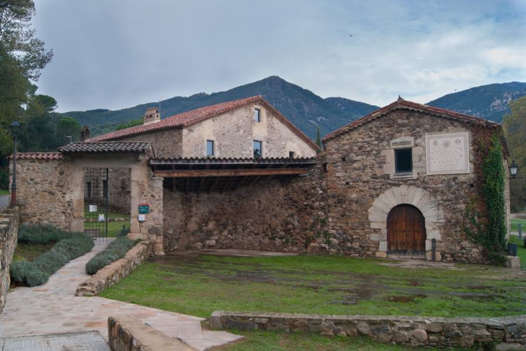

Visita · Gualba
Can Figueres és una masia agrícola i forestal amb una particularitat: és un clos tancat o casa forta , com mostren les espitlleres dels murs. Té dos edificis separats per un pati. El més antic,…